STEP 1 커넥터 연결 — 지금 당장 할 수 있어요
Atlassian, Gmail, Google Drive, Slack 등 클릭 한 번으로 연결. 별도 권한 신청 없이 바로 사용할 수 있습니다.
① 좌측 하단 프로필 클릭 → 설정 선택
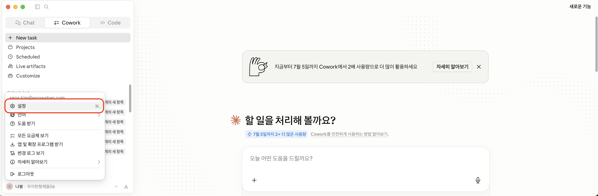
② 설정 화면 → 커넥터 탭 클릭 → 맞춤 설정 링크로 이동
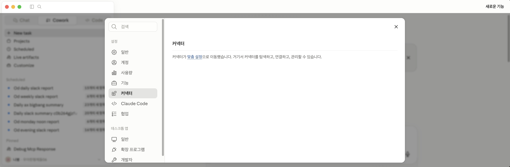
③ 웹 섹션에서 원하는 서비스 선택 → 연결 버튼 클릭 → 로그인 인증 → 완료!
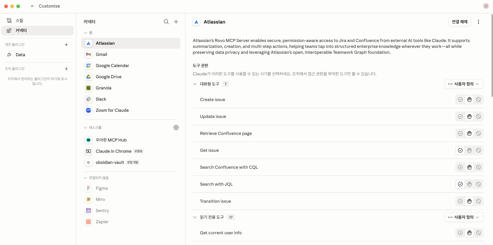
💡 공용 Wi-Fi 같은 것 — 누구나 접속 가능한 공식 연결이라 설치가 매우 간단합니다. 연결 후 Claude 채팅창에서 바로 "Confluence에서 ~찾아줘", "Slack에서 ~검색해줘" 사용 가능!
STEP 2 우아한 MCP Hub 연결 — 사내 데이터까지 연결
Trino, DataHub 등 우형 내부 시스템에 연결하는 통로. 사내 권한 승인이 필요하지만, 한 번 연결하면 데이터를 자연어로 바로 조회할 수 있습니다.
⚠️ Trino 사용자는 추가 권한 필수!
데이터 조회(Trino)를 사용하시는 분들은 반드시 Data Platform 권한 도 별도로 받으셔야 합니다. (이미 제플린을 사용하시던 분들은 이미 권한이 있으신거니까 Pass!)
🔐 Data Platform 권한 신청하기
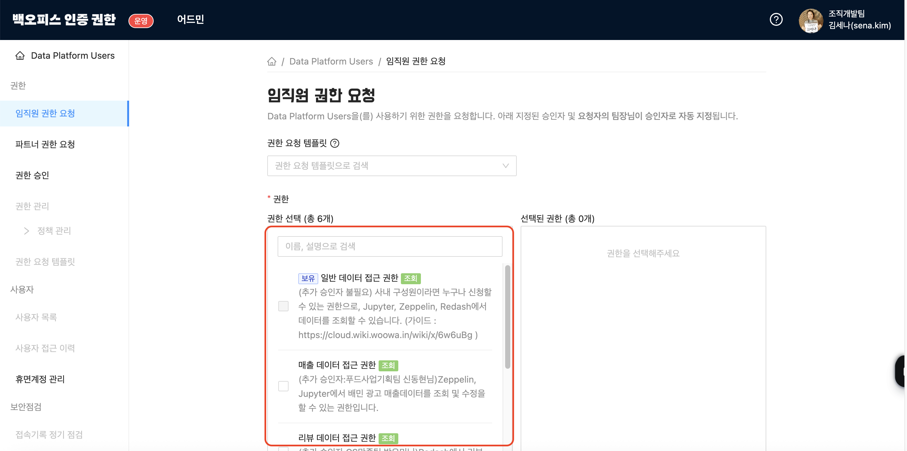
② 승인 완료 후 — MCP Hub 설치
우아한 MCP Hub 자동설치파일 다운 및 설치는 김동환 | 공통시스템파트 님이 정리해주신 가이드를 참고하세요.
③ 설치 후 — 원하는 MCP를 My Space에 추가
MCP Hub에서 사용할 MCP를 선택하고 My Space에 추가 하세요.
원하는 MCP 선택 후 My Space에 추가
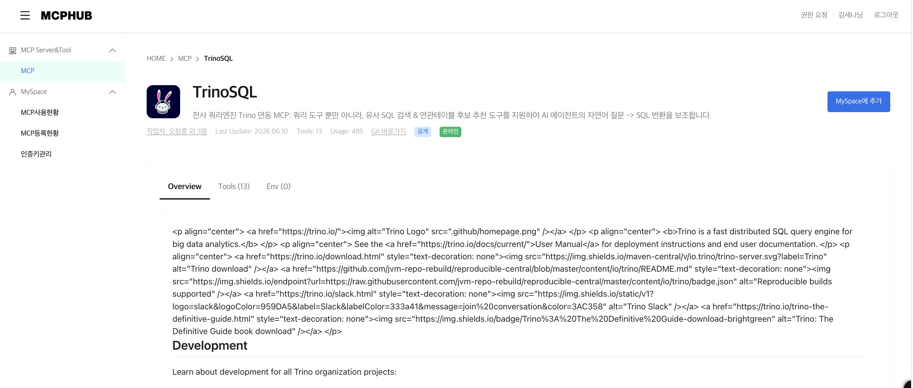
현재 My Space에 추가된 MCP 목록
🔐 회사 VPN 같은 것 — 사내 권한이 있어야만 접속 가능한 내부망 연결입니다. 한 번 연결하면 자연어로 사내 데이터를 바로 조회할 수 있어요.
⚠️ 커넥터로 Jira·Wiki(Atlassian) 연결이 안 된다면?
API 토큰을 직접 생성해서 MCP Hub에 입력하면 해결됩니다.
Atlassian API 토큰 생성 페이지 에서 토큰 생성 & 복사MCP Hub 설정에서 ATLASSIAN_TOKEN 항목에 복사한 토큰 붙여넣기
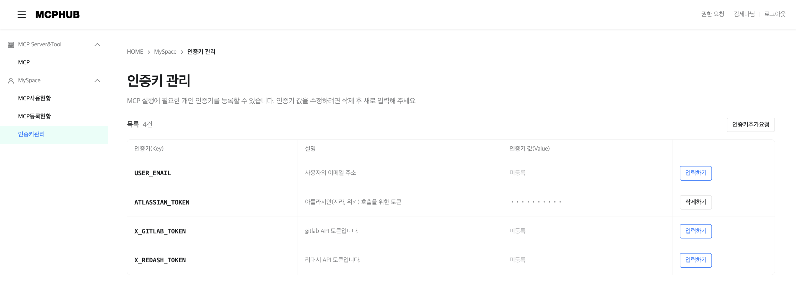
PART 1 원리 — AI는 어떻게 답을 만드나
🥪 샌드위치 비유: 컴퓨터는 시키는 것만 한다
지난 70년간 컴퓨터는 빈틈이 하나라도 있으면 오해 를 냈습니다. 사람이 모든 빈틈을 메워야 했죠. 그런데 지금의 AI는 "샌드위치 만들어 줘" 한마디로 맥락을 스스로 추론합니다. 빈틈을 메우는 부담이 사람 → AI로 넘어왔습니다.
🎯 AI의 핵심 원리: 다음 단어 예측
다음에 올 확률이 가장 높은 단어를 고른다 — 그게 전부입니다.
한 단어씩, "지금까지의 문맥 다음에 무엇이 가장 그럴듯한가"를 계산해 이어 붙입니다. 그걸 끝없이 반복해 문장을, 문단을, 보고서를 만들어냅니다.
📚 학습 과정: "말 잘 통하는 비서"가 되기까지
① 베이스 모델 — 인터넷 수조 단어로 "다음 단어 확률" 하나만 수조 번 반복 학습. 아무도 안 가르쳤는데 문법·상식·코드·번역까지 습득② 모범 답안 학습 — 사람이 직접 쓴 좋은 예시 답변 수만 개를 따라 하도록 추가 학습③ 사람 피드백 학습 — 답변 A·B·C·D에 사람이 순위를 매겨, "사람이 좋아하는 답" 쪽으로 성향 조정
⚠️ 환각 (Hallucination)
AI가 사실이 아닌 내용을 마치 진실인 것처럼 자연스럽게 말하는 현상입니다. AI는 답할 때 "이게 사실인가?"를 검증하지 않습니다. 그저 문맥상 확률이 가장 높은 단어를 이어 붙일 뿐 입니다.
⚠ 핵심 이해
학습 데이터가 충분하든 부족하든, AI 입장에서 동작은 완전히 똑같습니다.
"내가 지어내고 있다"는 자각이 없습니다.
AI는 진실을 말하는 기계가 아니라, 가장 그럴듯한 다음 단어를 고르는 도구다
PART 2 활용 — AI를 잘 쓰는 법
🪙 토큰 (Token)
사람은 글을 '단어'로 인식하지만, AI는 가장 작은 조각인 토큰 단위로 읽습니다. 자주 같이 나오는 조각을 한 덩어리로 합쳐 만들죠 — 자주 쓰는 말에 줄임말이 생기는 것과 같습니다.
🖥️ 컨텍스트 창 = AI의 책상
AI에겐 크기가 정해진 책상 이 하나 있습니다. 그 위에 올려둘 수 있는 토큰의 양이 한정돼 있어요. AI는 이 책상 위에 올라온 것만 보고 답을 만듭니다.
앞부분 — AI가 가장 잘 본다. 중요한 지시는 여기에중간 — 흐릿하게 본다. 슬쩍 끼우면 놓치기 쉽다뒷부분 — 잘 본다. 핵심을 다시 한 번 반복하면 좋다
💡 충격 사실
AI는
매 메시지마다 대화 전체를 다시 읽습니다. 단톡방에 새로 들어온 사람이 매번 위로 스크롤하듯 — 길어질수록 책상이 어질러지고, 답 품질이 떨어집니다.
🆚 같은 부탁, 다른 결과
❌ 낭비형
"음, 제가 사실 요즘 좀 고민이 많은데요, 회사에서 메일을 써야 하는 일이 있어서요. 그게 좀 거절하는 메일이거든요…"
✅ 압축형 (복사해서 써보세요)
거래처에 정중하게 제안을 거절하는 비즈니스 이메일. 이유는 예산 부족, 관계는 유지하고 싶음, 3문장 이내로.
압축형 프롬프트를 직접 복사해 써보세요:
거래처에 정중하게 제안을 거절하는 비즈니스 이메일. 이유는 예산 부족, 관계는 유지하고 싶음, 3문장 이내로.
🛠️ 실전 팁 1 — 긴 작업은 phase로 분해
긴 작업을 한 세션에 몰면 책상(컨텍스트)이 금방 쌓입니다. 계획을 파일에 박제한 뒤, phase를 나눠 각각 새 세션으로 실행하세요.
🛠️ 실전 팁 2 — 작업이 끝나면 /clear
한 작업이 끝났으면 즉시 /clear — 쌓인 컨텍스트를 비우고 다음 작업을 깨끗하게 시작합니다.
🛠️ 실전 팁 3 — 이어가야 할 때는 /compact
대화가 길어졌지만 이어가야 한다면 /compact로 핵심 맥락만 요약해 남기고 나머지는 정리합니다.
🧑💼 AI = 능력 쩌는 신입사원
시키는 건 정말 다 잘하는데, 뭘 해야 할지는 모릅니다. 내가 원하는 걸 명확히 말해줘야 하죠. 그런데 명확히 말하려면? 내가 뭘 원하는지 내가 먼저 알아야 합니다.
원하는 게 막막할 때, AI에게 "자기 자신 인터뷰"를 시켜보세요:
내가 ○○를 하고 싶은데, 한 번에 한 질문씩 던지면서 내가 진짜 뭘 원하는지 끌어내 줘.
AGENDA 오늘의 흐름
1. 왜 필요한가 — Claude Code란? / 물어보새 vs Claude Code / 데이터팀 없이도 직접2. 어떻게 쓰나 — 사전 준비 / Code 탭 / 새 세션 / 핵심 4개 / CLAUDE.md / MCP / 실전 패턴3. 사례와 실습 — 직군별 사용 패턴 / 마음가짐 / 물어보새 소개 / 우수 사례 / 믿고 쓰기(검증) / Next Step
WHY Claude Code란 & 물어보새와 뭐가 다른가
💻 Claude Code 한 줄 정의
터미널에서 돌아가는 AI 개발 파트너 (Claude 모델 기반 Agent).
MCP란? AI가 외부 시스템(DB·Slack 등)에 연결하는 표준 프로토콜. Cursor와 Claude Code 모두 MCP를 지원해요. 차이는 '누가 더 쉽게 시작하느냐' — Cursor는 개발자 환경, Claude Code는 채팅처럼 시작하므로 비개발자에게 유리합니다.
물어보새 — 간편한 활용
✓ Slack에서 바로 질문 → 답변#물어보새-실험실 채널에서 질문하면 스레드로 답해줘요 테이블명·메트릭 설명 없이 바로 쿼리 설치·연동 없이 슬랙 채널에서 호출
Claude Code — 맥락 주입 · 정기 업무 자동화
★ 로컬 파일 직접 읽기·수정·생성Excel, CSV, 코드 파일을 내 PC에서 직접 열고 편집해요 복잡한 분석 요청도 긴 맥락을 유지하며 처리해요 프로젝트 DB·용어·규칙을 파일로 저장 — 매 세션 자동 로드 GitHub, 내부 API 등 원하는 시스템 직접 연결해요 "DB 조회 → 분석 → 시각화 → PPT 저장" 한 번에 실행해요
💡 구분 기준
간단한 조회·검색은
물어보새 로, 복잡한 분석·자동화·파일 생성은
Claude Code 로 도전해보세요.
📊 데이터 활용의 병목 — Claude Code + MCP가 해소합니다
요청 → 대기: "이 숫자 좀 뽑아주세요" → 데이터팀에 요청하고 며칠 뒤 회신
정의 핑퐁: "이 메트릭 정의가 뭐죠?" → DM·미팅 반복 → 결국 다시 확인
결과 재포장: 받은 결과를 표·차트로 다시 정리 → 슬랙·컨플에 수동 업로드 → 매주 반복
시작하기 사전 준비 & 새 세션 시작
🚀 시작 전 2가지만 확인하세요
Claude Desktop 설치 후 Anthropic 계정으로 로그인
MCP-Hub 연결 —
방법 1) 확장프로그램 활용하여 연결하기
|
방법 2) 가이드 영상
▶ 새 세션 시작 — 3단계
⌨️
1. Cmd/Ctrl + N
Code 탭 사이드바에서 새 세션 생성
📁
2. 작업 폴더 선택
분석 대상 디렉터리를 지정
💬
3. 자연어로 요청
Claude가 알아서 실행
RGN2단위로 2026년 3월 대비 4월 주문수가 가장 급등한 지역 TOP 5를 알려줘. 그리고 예상되는 원인도 분석해줘.
터미널 명령어 없음. 자연어 한 번만 입력하면 끝.
💡 MCP 허브가 연결되어 있다면, 꼭 Claude Code가 아니어도
핵심 4개 Claude Code를 움직이는 4가지
01 세션
작업할 폴더 단위의 격리된 공간. 여러 개를 동시에 띄울 수 있어요.
02 MCP
외부 도구·데이터에 연결하는 표준 어댑터. DataHub · Trino · Slack 등.
03 CLAUDE.md
프로젝트 컨텍스트를 적어두는 메모. 매번 설명 반복 안 함.
04 Skill
반복 작업을 명령어 하나로 압축한 매크로. /weekly-review 한 줄.
🔌 MCP-Hub를 통해 연결된 주요 MCP
DataHub — 테이블·메트릭 정의 검색. "이 지표가 뭐였더라"를 카탈로그가 답한다Trino — SQL 실행 엔진. SQL을 직접 안 써도 됩니다 — Claude가 작성합니다Slack — 조회권한이 있는 모든 메시지 탐색, Claude를 통해 자동 전송 가능Confluence — 위키 탐색·요약, 분석 결과·주간 리뷰·캠페인 리포트를 자동 생성
자연어 한 번으로 위 4개를 엮어 사용합니다 — 이게 오늘의 핵심입니다.
CLAUDE.md AI에게 기억 심어주기
세션은 기억이 없습니다. 매번 CLAUDE.md를 읽어 맥락을 복원합니다. /init으로 자동 생성하고, 답변 톤·DB 환경·검증 규칙까지 적어두면 매 세션 자동 적용됩니다.
CLAUDE.md는 폴더마다 따로 설정할 수 있어서, 프로젝트별로 다른 맥락을 자동으로 주입할 수 있습니다.
# 가맹점 데이터 분석 프로젝트
## 사용자
- 사업기획 직무 (SQL 초급자 수준)
## 답변 규칙
- 통계적 전문용어 사용 자제
- 추측 금지, 모르면 '확인 필요', 애매하면 구체화 질문
- 인사이트엔 구체적 숫자 포함
- 액션 아이템으로 마무리
## 산출물·검증
- 폴더: reports/local/share
- 산출물에는 항상 쿼리원문 + 추출기준 + 합계·건수 검증표 + 이상치 표시
💡 팁 — 결과물을 MD로 저장하거나 Skill로 만들기
마음에 드는 결과물이 나왔다면
"이 작업의 내용을 MD 파일로 만들어줘" 또는
"이 내용을 CLAUDE.md에 추가해줘" 라고 명령하면 됩니다.
반복할 작업이라면
"이걸 Skill로 만들어줘. 명령어는 /○○○으로 해줘" 라고 하면 재사용 가능한 매크로가 생성됩니다.
핵심 좋은 프롬프트 vs 헤매는 프롬프트
같은 의도, 같은 모델 — 결과 차이는 4가지 요소 에서 갈립니다.
❌ 이렇게 쓰면 헤매요
① 모호함 — 무엇을 원하는지 불분명"배민 매출 분석해줘" — 어떤 매출? 어느 기간? 무슨 단위? 내가 뭘 하는지 설명 없이 요청 → Claude가 맥락 없이 일반론으로만 답 "정리해줘"만 함 — 표? 차트? 마크다운? 어디에 저장? 결과 숫자를 그대로 신뢰 → 검증 안 된 분석이 보고로 나감
✅ 이렇게 쓰면 정확해요
① 구체적으로 — 기간·대상·단위 명시"2026-04 서울 강남구 가게 일매출 TOP10을 가게당 평균 객단가와 함께" "영업기획자입니다. 줄서는맛집 캠페인 효과 분석 중(기획문서 첨부). KPI는 가맹점당 주문수" "[RGN1 | RGN2 | 가게명 | 일평균 주문수 | 전주 대비 증감률] 표로 → 구글시트에 저장" "전체 합계·건수 + 샘플 5건 raw 데이터 + 이상치 별도 표시해줘"
영업기획자입니다. 줄서는맛집 캠페인 효과 분석 중입니다 (기획문서 첨부). KPI는 가맹점당 주문수입니다.
2026-04 서울 강남구 가게 일매출 TOP10을 가게당 평균 객단가와 함께 알려줘.
[RGN1 | RGN2 | 가게명 | 일평균 주문수 | 전주 대비 증감률] 표로 정리해줘.
전체 합계·건수 + 샘플 5건 raw 데이터 + 이상치 별도 표시해줘.
모호함을 줄이고 검증을 요청하면, Claude가 분석가처럼 동작합니다.
실전 패턴 데이터 활용 3가지 패턴
📤 패턴 1 — 조회 → Slack 전송
시나리오: 어제 매출 TOP 가맹점을 Slack에 전송
① DataHub MCP
→
② DataHub MCP
→
③ Trino MCP
→
④ 내부 처리
→
⑤ Slack MCP
SQL을 한 줄도 작성하지 않았습니다. "무엇을 알고 싶은지"만 말씀해 주시면 됩니다.
어제 서울 강남구 가맹점 매출 TOP 10을 표로 정리해서 #sales-daily 에 올릴거야. 올리기 전에 데이터 먼저 보여줘.
매일 아침 09:00에 어제 강남구 가맹점 매출 TOP 10을 나에게 Slack DM으로 보내줘.
📊 패턴 2 — 분석 → 인터랙티브 HTML 대시보드
분석 결과를 동료에게 바로 공유할 수 있는 인터랙티브 HTML로 생성합니다. (HTML 공유방법 Slack 스레드 )
① DataHub
→
② DataHub
→
③ Trino
→
④ 내부
→
⑤ Recharts
→
⑥ 공유
입점시점에 CPC를 설정한 가게 vs CPC 미설정 가게 그룹을 비교하고 싶어.
그룹별 가게당 주문수 추이를 코호트로 비교 분석하고, 결과를 dashboard.html로 만들어줘.
대상기간은 2025년 10월 입점 ~ 2026년 3월 입점.
지역(RGN1) 필터, 월별 추이 차트 포함해서.
📌 실제 구현된 인터랙티브 대시보드 예시
핵심은 "움직이는 결과물" — 정적 보고서 한 장보다, 직접 만져보며 답을 찾는 대시보드가 의사결정을 빠르게 만들어요.
⚙️ 패턴 3 — 반복 분석을 Skill로
자주 돌리는 데이터 분석을 /명령어 한 줄로 등록해두는 기능입니다. 한 번 만들어두면 누구나 동일한 품질로 같은 분석을 돌릴 수 있습니다.
방금 한 캠페인 분석 작업을 Skill로 만들어줘. 명령어는 /weekly-campaign-review 로 하고, 날짜 범위를 파라미터로 받게 해줘.
/weekly-campaign-review T1캠페인 2026-05-17 2026-05-23
마음가짐 AI를 잘 쓰는 사람의 공통점
컴퓨터의 모든 작업을 AI에게 맡긴다고 생각하기
몰라도 된다 — 어차피 Claude에게 대충 물어보면 재질문을 통해 요구사항을 명확하게 할 수 있도록 도와줌
재능이 아니라 호기심의 차이 입니다
이런 질문도 그냥 해보세요:
배달플랫폼 마케팅기획팀이에요. Claude Code를 잘 써서 데이터 기반 좋은 기획을 해보고 싶어요. 어떻게 시작하면 좋을까요?
매주 하는 보고서 작업을 어떻게 자동화할 수 있을까요?
💬 사내 AI 봇 '물어보새' — 이미 쓸 수 있어요
Slack 채널 #물어보새-실험실 에서 바로 질문하세요. 사내 데이터 구조를 이미 학습한 상태라 테이블명·메트릭 설명 없이도 바로 쿼리를 작성해줍니다.
사내 데이터 구조와 테이블명을 이미 학습 — 맥락 설명 없이 바로 쿼리 작성
보안 승인된 환경에서 운영 — 사내 데이터를 외부에 노출할 걱정 없음
Slack 채널에 바로 결과를 올려줘서 팀원과 즉시 공유 가능
데이터를 인터랙티브 HTML 대시보드로 시각화 해줘요
🏆 물어보새 베스트케이스 — 데이터분석가 없이 직접 했다
①
배민클럽 무료체험 → 유료 전환 임계점 분석
주요 요청 내용
배민클럽 무료체험 사용자의 유료 전환율을 코호트별로 분석
전환 퍼널 단계별 이탈 원인 파악
체험 기간 중 어떤 행동이 전환과 상관관계가 있는지 확인
⭐ 왜 베스트인가?
C-level이 직접 17턴 완주 — 중간 보조 없이 물어보새와 단독 분석
실행 가능한 결론 도달 — "체험 3일 내 주문 경험이 전환 핵심" 인사이트 확보
교차검증 수행 — 쿼리 결과를 재확인하며 스스로 오류 검증
②
배민클럽 × 와우 16개 마이크로 세그먼트 분석
주요 요청 내용
배민클럽 구독자를 와우 구독 여부 × 이용빈도 × 주문금액 기준으로 세그먼트 분류
16개 마이크로 세그먼트별 핵심 KPI 비교 (이탈률·수익기여도·재구매율)
⭐ 왜 베스트인가?
100+ 턴 대화 — 반나절 이상 지속적 분석 세션세그먼트 설계부터 결과 해석까지 원스톱 — 분석가 1~2주 작업량 단독 완수
비즈니스 전략팀 자체 세그먼테이션 — 데이터팀 의뢰 없이 전략 인사이트 직접 확보
"가장 지켜야 할 고객"/"이탈 위험 고객"으로 우선순위화 — 구조적 사고 실현
③
PSM(성향점수매칭)으로 쿠폰 순증 주문 수 계산
주요 요청 내용
PSM을 활용해 특정 쿠폰이 실제로 만들어낸 순증 주문 수 계산
공변량 12개 기반 성향점수 매칭으로 TG/CG 동질성 확보
최종적으로 인벤토리키/배너이미지 단위 CTR×CVR 물어보새 스킬 설계 계획 수립
⭐ 왜 베스트인가?
고급 통계 방법론 독립 적용 — PSM은 통상 데이터 과학자 영역인데 직접 실행
인과추론으로 격상 — "얼마나 팔렸나"가 아닌 "쿠폰이 실제로 만든 주문 수" 질문
물어보새 활용 모범 사례 수집을 별도 요청 — AI 활용문화 기여
스킬 설계로 연결 — 1회성 분석이 아닌 반복 자동화 도구 구상
💡 3가지 케이스의 공통점
"무엇을, 어떤 기준으로, 어떤 형태로" — 3가지를 명시하면 Claude가 분석가처럼 동작해요도메인 지식은 여전히 기획자 몫 — AI는 연산과 패턴 인식을 맡아요
잘 쓰는 분과 그렇지 않은 분의 차이는 프롬프트 품질 에서 갈려요
좋은 분석 = Claude × 도메인 지식 × 좋은 프롬프트
주의 활짝 열되, 믿을 수 있게 — 결과 검증
왜 그럴듯한데 틀릴까 — 2가지 이유
① 정제 안 된 테이블 — AI가 임시·폐기·과거 테이블에서 집계. 어떤 게 최신 정답 테이블인지 모릅니다② 부서마다 다른 용어 정의 — 신규/이탈복귀/활성 고객 지표 정의? AI가 그럴듯한 쪽을 골라버립니다
역할 분담: 여러분 = 무엇을·왜 (비즈니스 의도/목적) / 데이터팀 = 정답 데이터 + 표준 정의
🚀 Next Step
Lv1 — 데이터 추출/분석/시각화 한 번 직접 해보기Lv2 — 반복 분석 1건 자동화 (매주 돌리던 작업)Lv3 — 우리 팀 컨텍스트 CLAUDE.md에 정착Lv4 — 분석 Skill로 조직 확산 (/명령어 한 줄로)
데이터를 잘 쓰는 조직은 좋은 데이터를 만드는 팀과 함께 강해집니다.
💬 시작 전에
"AI한테 시켜봤는데 생각보다 별로다?" → AI가 못한 게 아니라,
구조가 없었던 것 입니다.
STEP 1 입력 — 데이터가 흐르는 구조를 먼저 만들어라
📥 데이터는 지속적으로 채워지고 있는가?
다양한 데이터 소스를 AI가 접근할 수 있는 구조로 연결하세요.
📊스프레드시트 가벼운 기록
🗄️Trino 정형 DB
📝Confluence 팀 위키
💬Slack 대화·결정
📓Obsidian 개인 노트
🗂️ 아카이빙이 업무 퀄리티를 결정합니다
나 혼자 보는 곳에 저장하면 AI는 못 씁니다 구글시트 리포트는 그만 — 위키로 전환하세요
데이터를 1번 가져오려고 AI를 설계하면 시간 낭비. 데이터가 끊임없이 부어지는 구조 를 만드세요
📊 시트는 레포트가 아닌 데이터베이스용
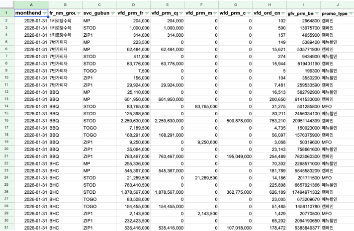
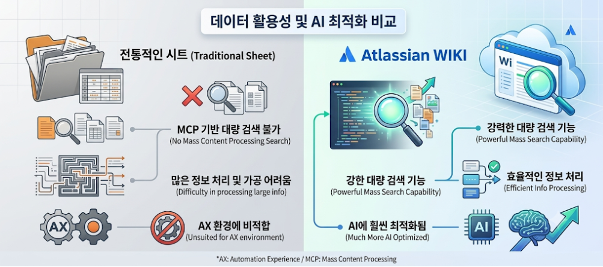
스프레드시트는 행과 열의 기준이 계속 달라져 AI가 파악하기 어렵습니다. 데이터는 행과 열이 동일한 기준 을 가질 때 AI가 읽기 쉽습니다.
✅ 파이프라인 구축 성공 사례
❌ BEFORE — 파이프라인 설계 실패
스프레드시트로 영업 스테이지 관리 → 며칠 하다 아무도 안 씀 → 데이터 없음 → 분석 불가 (데이터가 흐르지 않음)
✅ AFTER — 파이프라인 구축 성공
슬랙 '리스트' 기능으로 칸반보드 제작 → 영업사원이 자발적으로 입력 → 데이터를 주기적으로 DB 전환 (Claude Code로 자동 배치 ) → HTML 대시보드 완성
💡 핵심
데이터가 흐르는 구조를 만들면 뭐든지 만들 수 있습니다. 데이터가 흐르게 → 가공·축적 → 시각화 순서입니다.
🧠 입력의 두 번째 역할 — 좋은 맥락 주기
❌ 약한 질문
30대 여성 타겟 마케팅 전략 써줘
✅ 강한 질문
30대 여성 1인가구, 퇴근 후 도파민 충전이 필요한 사람. 식사와 술안주를 동시에 원하는 사람의 마케팅 전략
30대 여성 1인가구, 퇴근 후 도파민 충전이 필요한 사람. 식사와 술안주를 동시에 원하는 사람의 마케팅 전략을 써줘.
🔗 맥락 주는 4가지 방법
🔗 Atlassian/Slack MCP 연동 연동으로 먼저 학습 지시
📄 문서는 MD 형식으로 스프레드시트 ❌
🗂️ 예시 쿼리 · 스키마 함께 제공 데이터 구조를 알아야 정확히 가져옴
📚 위키에 적재하며 나만의 맥락 강화 쌓일수록 AI 품질이 올라감
🔗 Atlassian MCP 활용 팁
Atlassian MCP를 활용하면 Confluence, Jira 등 최신 문서를 Claude가 직접 읽어
업무 맥락을 정확하게 이해 합니다. 복수의 최신 문서를 통해 AI가 상황을 파악하게 하세요.
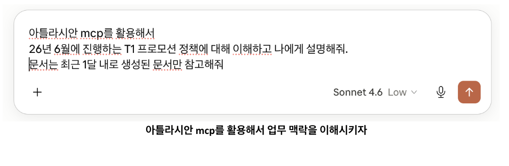
🧩 Quiz
데이터를 AI에게 붙여넣기로 줄 때, 스프레드시트보다 어떤 형식으로 줘야 할까요?
정답: MD(Markdown) 파일 — AI가 훨씬 정확하게 이해합니다.
📄 맥락은 MD 형식으로 전달
스프레드시트를 복사·붙여넣기로 주면 AI가 정보를 제대로 파악하기 어렵습니다. Markdown(MD) 형식 으로 변환해서 주면 AI가 훨씬 정확하게 이해합니다.
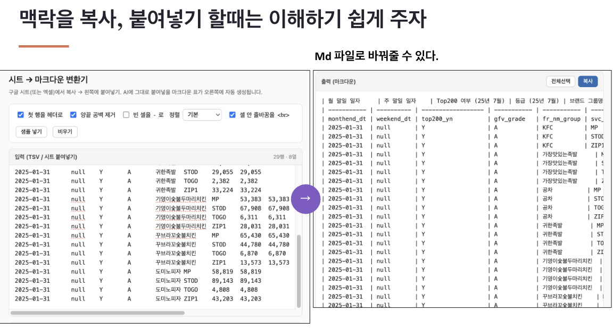
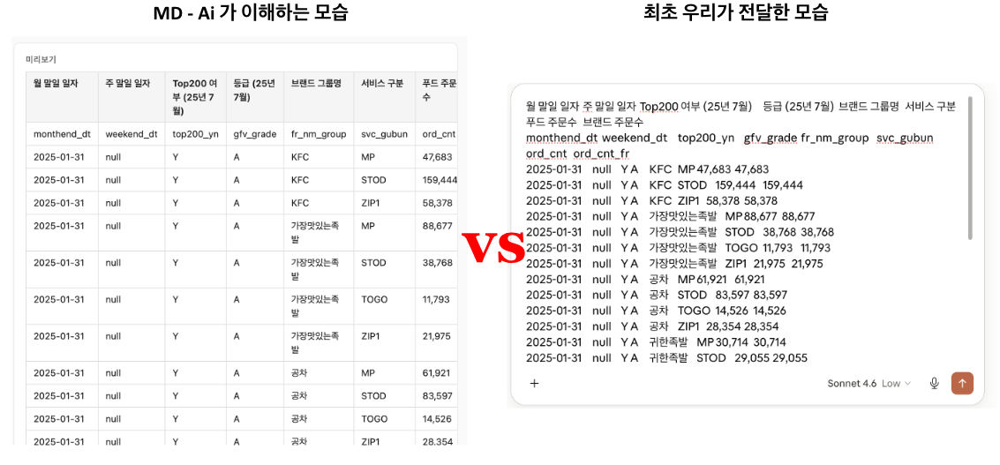
🤔 좋은 프롬프트 자체를 AI에게 물어보기
내가 [목표]를 달성하려고 하는데, 이걸 AI에게 잘 시키려면 어떻게 프롬프트를 써야 할지 먼저 알려줘.
🔍 쿼리를 시킬 때도 맥락 주기
Trino가 연결되어 있어도 AI가 데이터 구조를 모르면 틀립니다. 자주 쓰는 데이터 스키마, 테이블, 예시 쿼리를 MD로 정리해서 전달 하면 정합성이 크게 올라갑니다.
📄 배달의민족 데이터 카탈로그 (전체 테이블)
자주 쓰는 데이터 스키마와 테이블 그리고 예시 쿼리를 MD로 정리해서 전달해주는 것만으로도 정합성을 많이 높일 수 있다.
복사해서 사용하기 👇
▼
⚡ 라이트닝 토크 5분 생성형 AI 실무 노트 — AI는 결국 입력이 90%다
결과의 질은 모델이 아니라, 무엇을 어떻게 넣어주느냐에서 갈린다.
❌ 문제 — 한 컨텍스트에 다 넣으면 섞인다
숫자·담당자·정책·예외 케이스·톤앤매너·과거 자료·요구사항을 하나의 프롬프트에 전부 드래그해서 부어 넣으면, 맥락이 서로 섞이고 무엇이 중요한지 흐려져 결과가 엉망이 됩니다.
🤔 왜 그럴까 — 생성형 AI는 매번 다른 길로 간다
골인 지점만 알려주면 AI는 거기까지 가는 길을 매번 새로 생성합니다. 같은 목표라도 결과가 갈 때마다 달라지는 이유입니다.
🎯 핵심 — 골인 지점이 아니라 방점을 찍는다
모든 길을 그려줄 순 없습니다. 대신 "여기를 거쳐서 와라"는 방점 을 찍어줍니다.
📁 방법 — 입력을 파일로 쪼개 정리한다
방점은 곧 파일입니다. 섞이던 정보를 종류별로 나눠 각각 하나의 파일로 만드세요.
metrics.md — 숫자·지표 (목표치, KPI, 단가, 기준값)owners.md — 담당자·역할 (누가 무엇을 책임지는지)policy.md — 정책·규칙 (반드시 지켜야 할 제약)edge-cases.md — 예외·톤 (엣지 케이스, 말투 가이드)
🗂️ 도구 — GitLab에 올려 라벨을 붙인다
ai-context/main 폴더에 파일을 올리고 라벨로 각 파일이 어떤 방점인지 명확히 합니다. 바뀐 내용이 버전으로 이력에 남고, 팀이 같은 컨텍스트를 공유할 수 있습니다.
🔄 고도화 루프
한 번에 끝내는 게 아니라,
정리 → 라벨링 → 생성 → 파일 수정 을 반복할수록 결과가 좋아집니다.
STEP 2 처리 — 계획하고, 나누고, 체크하라
✂️ 1. 말줄임 (글씨 = 토큰)
지시는 짧고 명확하게. 서술어 줄이고 핵심만.
CTR 하락 캠페인만 찾아. 팀장 보고용 3줄.
📋 2. 계획 먼저
실행 전 항상 단계 계획을 먼저 요청하세요.
하기 전에 어떻게 할지 먼저 계획부터 세워줘.
🤖 3. 에이전트 + 정합성 체크
AI는 잘 틀립니다. 다른 에이전트로 정합성을 샘플 체크하고, 셀프 검증 시 "맞다고 우기는" 사례를 방지하기 위해 체크리스트를 만들어 활용하세요.
결과가 나왔으면, 다음 체크리스트 기준으로 각 항목이 올바른지 하나씩 검증하고 결과를 나에게 보고해줘:
1. [기준 1]
2. [기준 2]
3. [기준 3]
틀린 내용이 있다면 정확하게 짚어주고, 재발하지 않도록 수정 지시도 함께 해줘.
⚠ 주의
체크리스트를 안 만들면 AI가 검사를 안 하는 경우가 많습니다. 파일 용량이 크다면 CSV를 GitLab에 업로드하고, GitLab을 Claude Code로 연동해서 파악하는 편이 효율적입니다.
STEP 3 출력 — 자동화하지 않으면 반쪽짜리다
출력 형태는 다양하다
Slack 메시지, Confluence Wiki, Word 문서, 스프레드시트, HTML 보고서, 대시보드 — 지시만 하면 끝입니다. 진짜 핵심은 자동화 입니다.
🔄 자동화 수준
1단계 — Claude Code 코워크 스케줄링 (간단한 작업)2단계 — GitLab 파이프라인 연동 (정기 자동화)3단계 — 원하는 시간에 원하는 곳으로 자동 전달
⚙️ 자동화의 완성 — GitLab 연동
데이터 흐름: Trino (데이터) → GitLab 파이프라인 → HTML 보고서 / Slack / Confluence
GitLab 연결해줘. 파이프라인을 설치하고 [원하는 스케줄]에 맞게 자동화 설정해줘.
💡 팀 데이터 공유 팁
GitLab에 데이터와 정책을 업로드하고 팀원과 저장소를 공유하면, 팀원들이 동일한 데이터셋을 Claude Code로 활용할 수 있습니다.
RAG를 쉽게 실현 할 수 있습니다.
📊 AI 도입 전/후 — B2B 영업기획 실제 사례
AI 사용 전
입력: 제플린 → 시트
AI 사용 후
입력: Trino 데이터 추출 / Slack에서 추출 / 위키에서 추출대시보드 (예시) — 사내망에서만 열림
AI는 잘 틀립니다. 그래도 같이 갈 수밖에 없습니다. 잘 질문하고, 틀리면 잘 고쳐주고, 그럼 점점 쓰임새가 좋아집니다. 오늘 배운 것은 기술이 아니라 습관 입니다.
함정 1 환각 — 사실처럼 말하는 거짓
AI가 사실이 아닌 내용을 마치 진실인 것처럼 자연스럽게 말하는 현상입니다. 학습 데이터가 충분하든 부족하든 AI의 동작은 완전히 똑같습니다. "내가 지어내고 있다"는 자각이 없습니다.
✅ 대응 — 한 번 더 검증한다
AI는 초안 작성자이지, 최종 검수자가 아닙니다. 최종 책임은 언제나 사람의 몫입니다.
① 원본 확인 — 숫자·사실·인용은 원본 데이터와 직접 대조하거나 다시 계산② 출처 묻기 — "이거 근거 뭐야?"라고 되묻기. 가짜 출처가 실제 존재하는지까지 확인③ 교차 검증 — 검색·공식 자료로 한 번 더. 특히 숫자·인명·법조항·인용 출처는 가장 잘 지어내는 영역
이거 근거 뭐야? 출처가 실제로 존재하는지 확인해줘.
함정 2 보안 — 한 번 들어가면 다시 뺄 수 없다
우리가 "질문"이라 입력한 것은 AI 입장에서 "데이터"입니다. 외부 서버로 전송·저장되며, 한 번 들어가면 어디서 어떻게 쓰이는지 통제가 불가합니다. 그래서 처음에 무엇을 넣을지가 그만큼 중요합니다.
실전 보안 — MCP는 OK, 계정·위키 권한은 조심
✅ MCP로 연결된 데이터는 사용 OK
사내 MCP에 연결돼 들어오는 데이터는 이미 보안 검수를 거친 것 → 안심하고 활용하세요.
⚠ 개인 계정 대신 회사 발급 계정을 쓰세요
개인 계정은 금지 — 회사가 발급한 계정을 써야 학습·보안 정책이 적용됩니다.
⚠ 오히려 위키 권한 접근을 조심
'물어보새' 같은 사내 위키엔 AI도 접근할 수 있어요. 민감 문서는 위키 권한 설정을 더 신경 쓰세요.
함정 3 운영 반영 — 결과를 그대로 시스템에 넣지 마라
🚨 실제 사례
관리자 화면을 건너뛰고 시스템에 직접 데이터 투입 → 화면이 걸러주던 검증 단계 우회 → 하마터면 장애 발생
AI가 결과를 만들어 준다고 그대로 반영하는 건 다른 얘기입니다. 작은 습관 하나면 사고를 막을 수 있습니다.
반영 전엔 한 번 더 동료에게 물어보세요:
혼자 빠르게 가는 것보다, 더 잘 아는 사람한테 30초 보여주고 가는 게 훨씬 안전합니다.
정리 3-Check 원칙
Check 1 — 사실 확인 : 숫자·출처·인용은 반드시 원본과 대조Check 2 — 보안 확인 : 개인정보·민감 정보가 들어가지 않았는지 확인Check 3 — 반영 확인 : 운영 시스템에 넣기 전 동료에게 30초 검토 요청
AI는 가장 그럴듯한 다음 단어를 고르는 기계 — 책상을 깨끗이, 책임은 사람이.